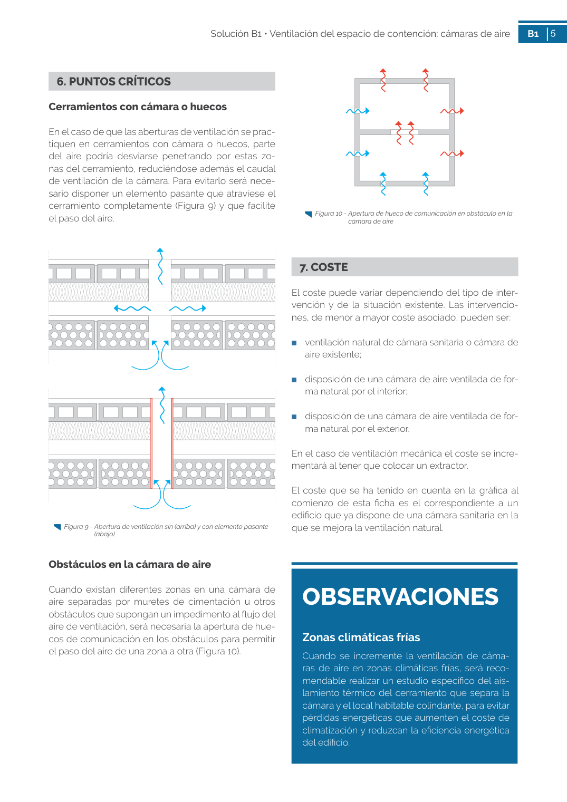
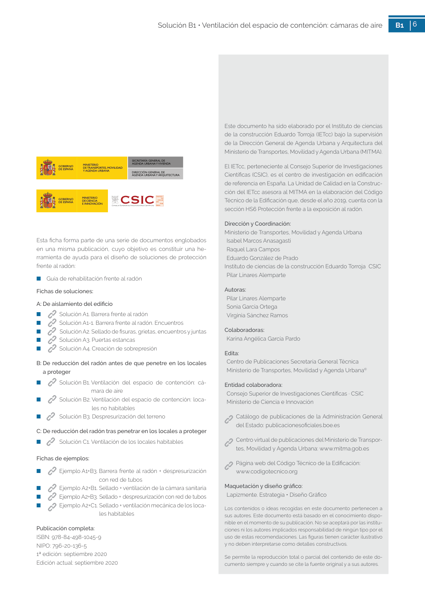

GUIA · OBSERVACIONES Zonas climáticas frías · versión sin-fecha · capa guia
Formatos: JSON compacto · Markdown · PDF fuente
Ámbito del documento · texto del ámbito · documento y tablas
Tipo: tablas, figuras · nivel 3 · sección estimada: 7. COSTE · padre: a0018
OBSERVACIONES Zonas climáticas frías Zonas climáticas frías Cuando se incremente la ventilación de cáma ras de aire en zonas climáticas frías, será reco mendable realizar un estudio específico del ais lamiento térmico del cerramiento que separa la cámara y el local habitable colindante, para evitar pérdidas energéticas que aumenten el coste de climatización y reduzcan la eficiencia energética del edificio. 6 Solución B1 • Ventilación del espacio de contención: cámaras de aire B1 6 Este documento ha sido elaborado por el Instituto de ciencias de la construcción Eduardo Torroja (IETcc) bajo la supervisión de la Dirección General de Agenda Urbana y Arquitectura del Ministerio de Transportes, Movilidad y Agenda Urbana (MITMA). El IETcc, perteneciente al Consejo Superior de Investigaciones Científicas (CSIC), es el centro de investigación en edificación de referencia en España. La Unidad de Calidad en la Construc ción del IETcc asesora al MITMA en la elaboración del Código Técnico de la Edificación que, desde el año 2019, cuenta con la


PDF fuente redistribuible: copia fiel enlazada en esta página (SHA256 verificado).